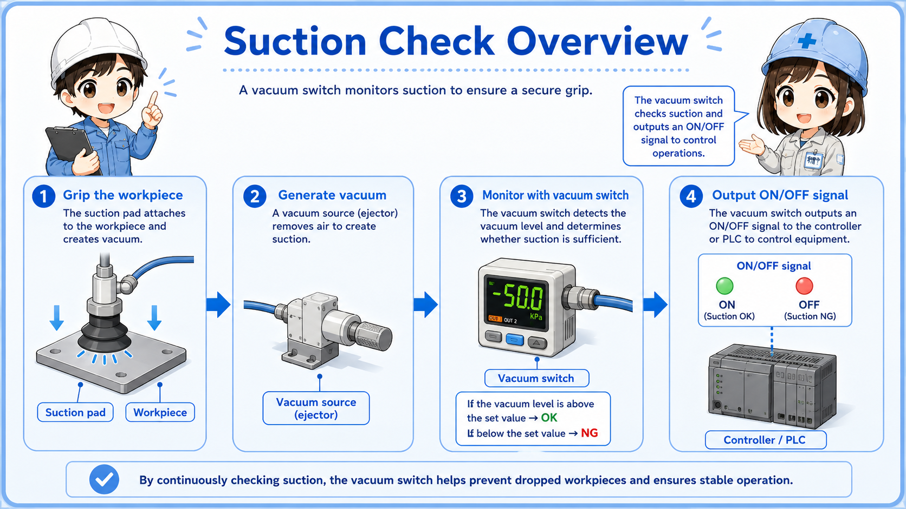
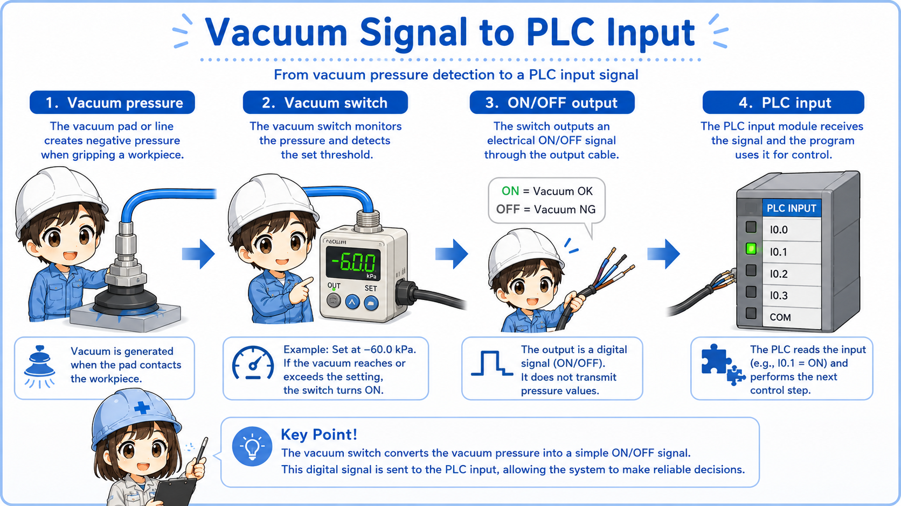
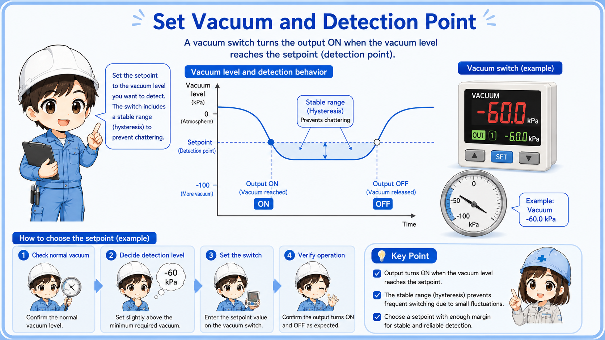
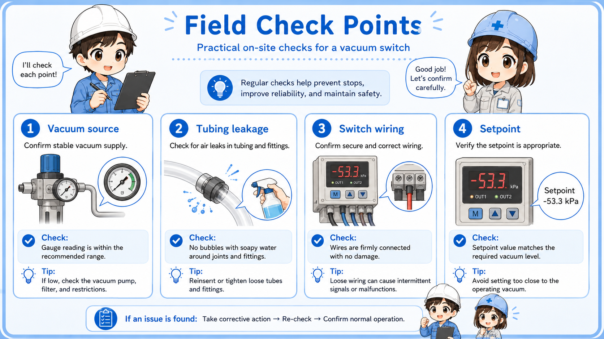

1. Basic idea: checking whether suction is established
A vacuum switch is used when the machine needs to know whether a workpiece has been picked up by suction.
A vacuum switch detects negative pressure. In many machines, it is used around a suction pad, vacuum ejector, or vacuum line. When the vacuum level reaches the set value, the switch output changes state.
In beginner terms, the important point is simple: the switch tells the control system whether suction is strong enough. It is often handled as a simple ON/OFF signal, not as a detailed pressure value.

Think of it as a suction confirmation device
The vacuum switch does not lift the workpiece by itself. The suction pad and vacuum source create the suction. The switch confirms whether the vacuum condition is good enough for the control sequence.
2. How suction check works
The machine checks vacuum level before allowing the next movement.
A common use case is pick-and-place equipment. The suction pad touches the workpiece, vacuum is generated, and the vacuum switch checks whether the vacuum level has reached the set point. If the signal is OK, the PLC allows the arm, cylinder, or robot to move.
If the vacuum level does not reach the set point, the machine may stop, retry, or show an alarm. This prevents the machine from moving while the workpiece is not properly held.
1. Suction starts
The vacuum source pulls air through the suction pad.
2. Vacuum is detected
The vacuum switch checks whether the vacuum level passes the set point.
3. PLC uses the signal
The PLC uses the input as a condition for the next step.

3. How vacuum signals are used by a PLC
In PLC logic, a vacuum switch is usually treated like a normal input device.
The PLC input may be used as a suction confirmation, start permission, movement permission, or alarm condition. For example, the next movement may be allowed only when the vacuum switch input is ON.
This is why vacuum switch signals are important in equipment that carries parts by suction. If the signal is missing, the machine may assume that the workpiece has not been picked up safely.
Pick confirmation
The PLC checks whether the part has been picked up before moving.
Movement permission
The next cylinder, robot, or actuator step may wait for the vacuum input.
Drop prevention
If vacuum drops during movement, the PLC may stop or issue an alarm.
Sequence condition
The vacuum signal is often one condition in a larger automatic sequence.
Separate the suction problem from the input problem
If the PLC input does not turn ON, check whether the vacuum is actually being generated first. Then check the switch output, wiring, connector, and PLC input monitor.
4. Set vacuum and detection point
The set point decides when the vacuum switch output changes.
A vacuum switch usually has a set value. When the vacuum reaches that level, the output changes. If the set value is too strict, the output may not turn ON even though the suction pad seems to be holding the workpiece. If the set value is too loose, the signal may turn ON even when the suction is not reliable enough.
Many modern vacuum switches have a display and digital setting. Older or simpler types may use a small adjustment dial. In either case, the set value should match the machine requirement, not just what “seems to work.”

Do not change the set value casually
The vacuum set point may affect product handling, machine timing, and drop prevention. Before changing it, confirm the drawing, machine specification, standard value, or responsible engineer's instruction.
5. Field check points
Most suction problems can be narrowed down by checking the vacuum source, pad condition, leakage, and signal path.
When suction confirmation fails, the switch is not always the cause. The suction pad may be worn, the workpiece surface may be rough, the vacuum line may leak, the ejector may be weak, or the filter may be clogged.
After checking the physical suction condition, check the vacuum switch output indicator, wiring, connector, and PLC input monitor. This order helps avoid replacing the switch before finding the real problem.

1. Suction pad
Check wear, cracks, dirt, wrong pad size, and whether the pad contacts the workpiece properly.
2. Vacuum source
Check ejector operation, vacuum pump operation, air supply, filter clogging, and valve operation.
3. Leakage and piping
Look for loose fittings, cracked tubes, poor sealing, or air leaks around the suction path.
4. Signal path
Check the output LED, wiring, connector, common line, and PLC input monitor.
Practical note
Vacuum trouble often comes from the mechanical or pneumatic side. Always check the pad, workpiece, tubing, and vacuum source before deciding that the switch is faulty.
6. Quick summary
A vacuum switch is a simple but important bridge between suction condition and PLC logic.
A vacuum switch detects whether negative pressure has reached a set level and changes its output signal. In automation, it is often used to confirm that a suction pad has picked up a workpiece.
The beginner-friendly way to understand it is this: the suction pad creates the physical condition, the vacuum switch converts that condition into a signal, and the PLC uses that signal in the program.
Remember this
When checking a vacuum switch, do not look only at the PLC input. Follow the whole path: suction pad → vacuum source → vacuum switch → wiring → PLC input → program condition.
Related articles
These English articles are useful next steps after learning vacuum switches.